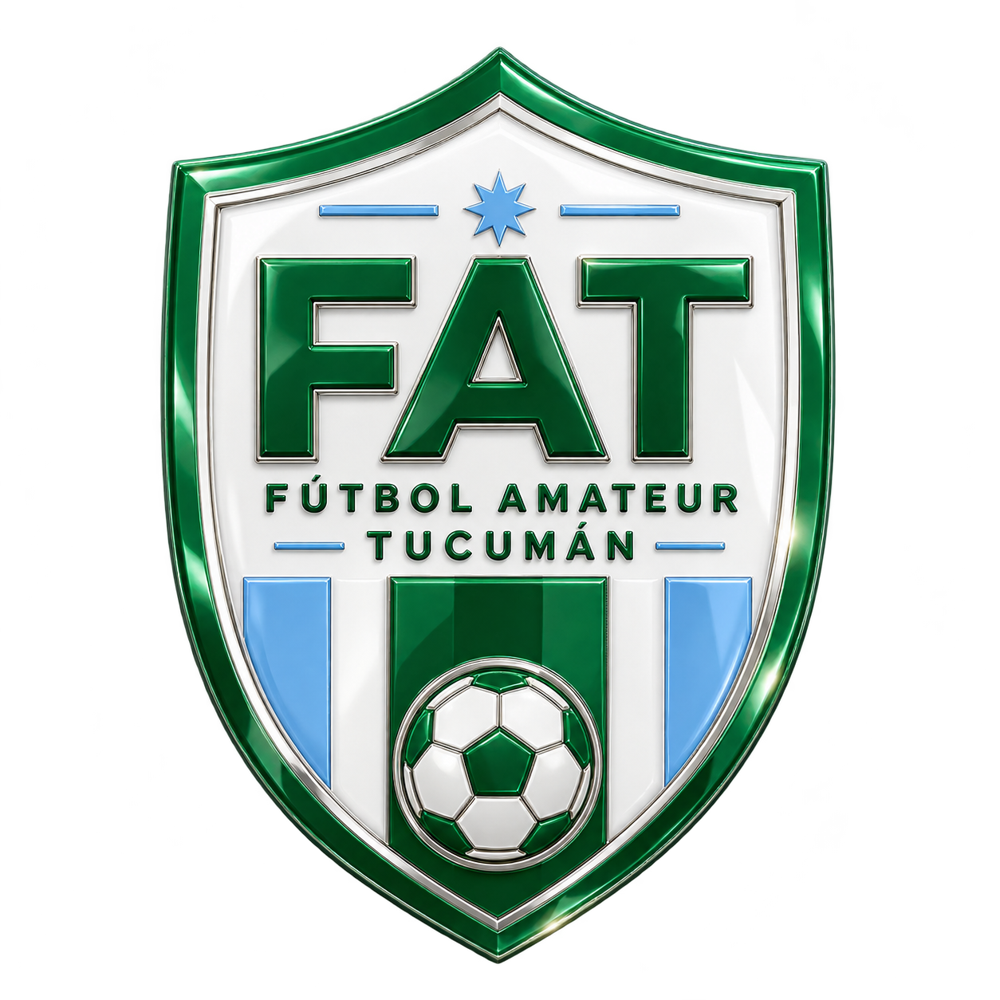
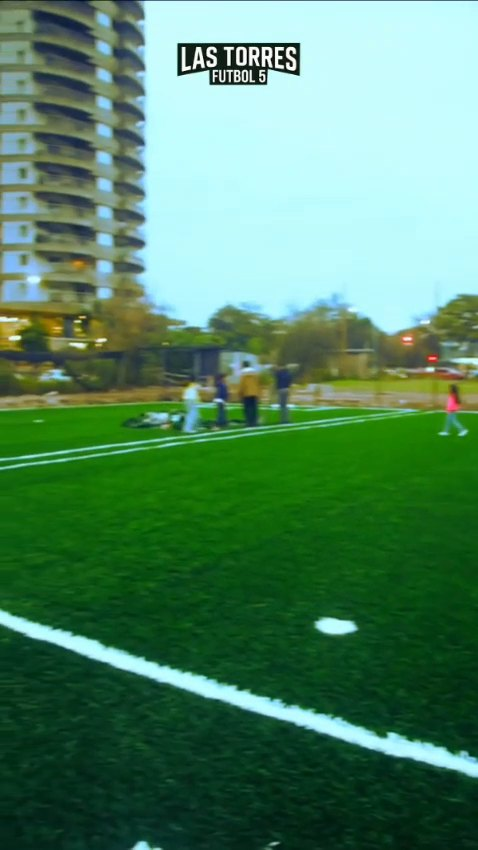
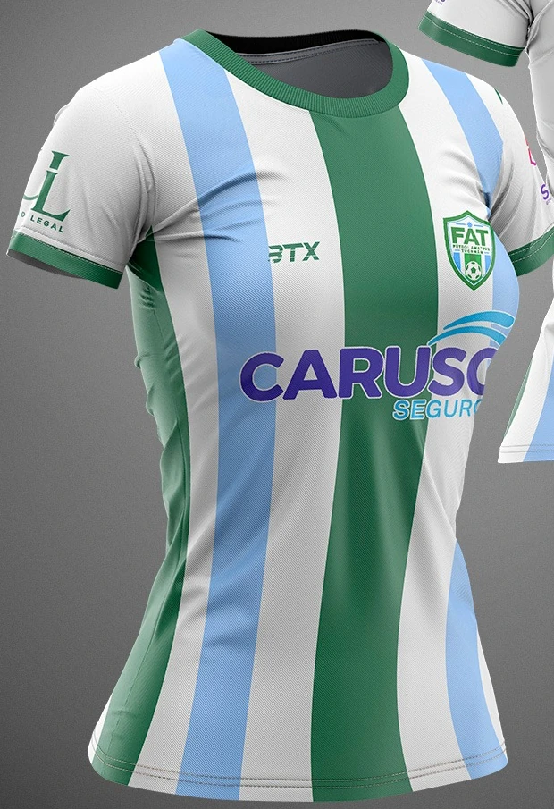
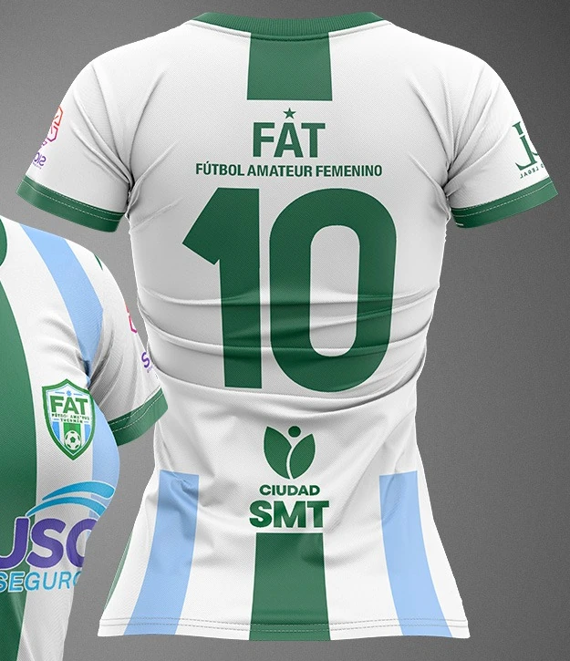
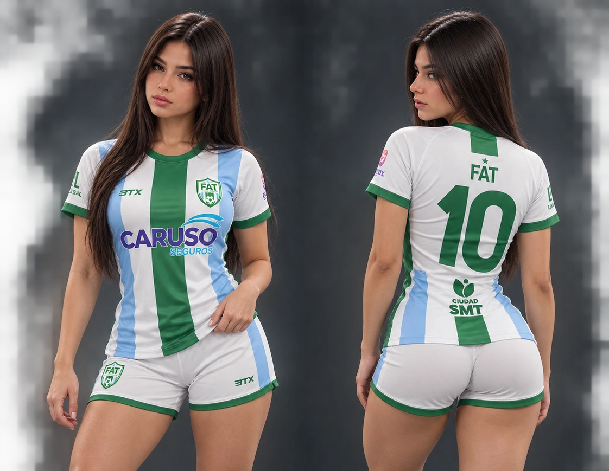
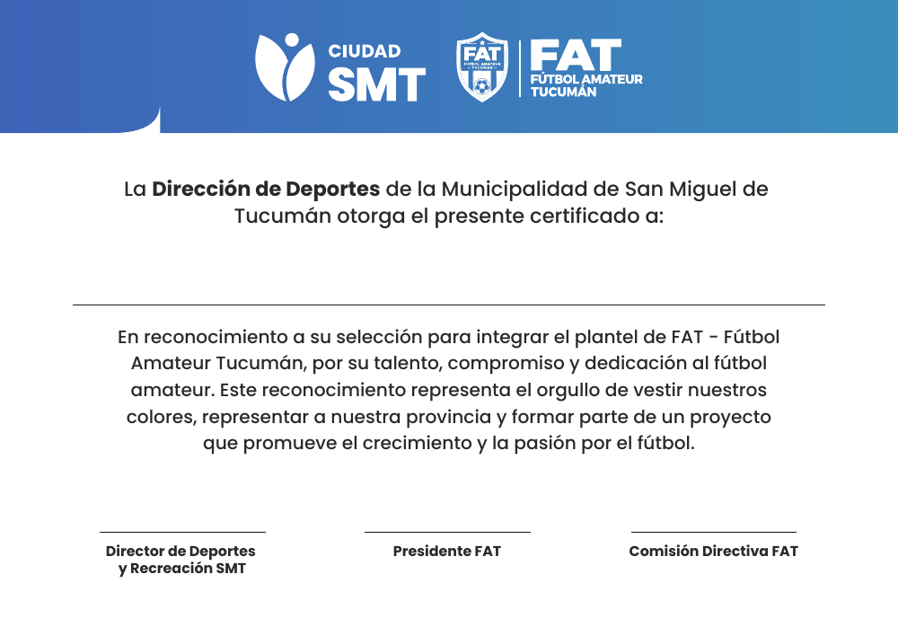

SELECCIONADOS OFICIALES · 2026
FÚTBOL
AMATEUR
TUCUMÁN.
Una identidad. Una provincia. La pasión de representar nuestros colores.
DESLIZÁ PARA CONOCERNOS
01 / IDENTIDAD
¿QUÉ ES FAT?
FAT es un proyecto deportivo independiente que promueve el desarrollo, la participación y la representación del fútbol amateur tucumano.
Impulsamos un espacio para jugadores masculinos y jugadoras femeninas, con compromiso, identidad y orgullo por representar a Tucumán.
IDENTIDAD / COMPROMISO / REPRESENTACIÓN

Imagen ilustrativa de canchas FAT; no verificada como fotografía del predio La Rinconada.02 / MODALIDADES
TRES FORMAS.
UNA PASIÓN.
Seleccionados de fútbol amateur en distintas modalidades, con una misma identidad de representación provincial.
03 / CONVOCATORIA
REPRESENTÁ
A TUCUMÁN.
Buscamos seguir construyendo un proyecto para jugadores masculinos y jugadoras femeninas que quieran formar parte de los seleccionados FAT.
Consultá por los canales oficiales para conocer más sobre la convocatoria.
04 / INDUMENTARIA
LOS COLORES
QUE NOS
REPRESENTAN.
Presentación de la camiseta FAT, con vistas frontal y posterior que alternan automáticamente.



INDUMENTARIA FAT / REFERENCIA VISUAL05 / CERTIFICADO
RECONOCIMIENTO
INSTITUCIONAL.
Un reconocimiento al talento, compromiso y dedicación de quienes son seleccionados para integrar FAT.
Ver modelo de certificado ↗
06 / SPONSORS
MARCAS QUE
ACOMPAÑAN.
Gracias a las empresas y organizaciones que acompañan el crecimiento del fútbol amateur tucumano.


07 / AUTORIDADES
QUIÉNES ESTÁN
DETRÁS DE FAT.
Conducción y coordinación institucional del proyecto.